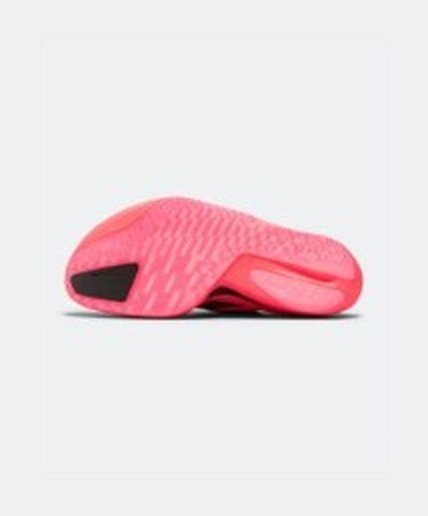
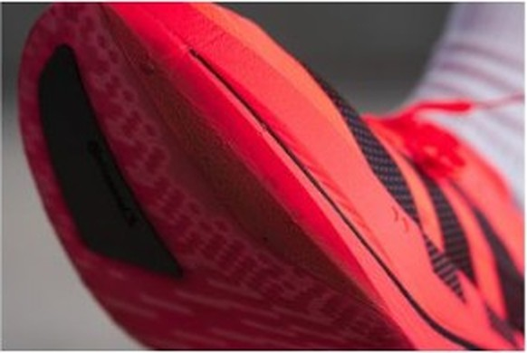

RACE｜レーシング
最軽量で最安。ただし足を選ぶ。
レース用4足で一番軽く、一番安い。アディオス プロ5の価値はこの2点に尽きる。ただし足を選び、減りも早い。サブ3前後を本気で狙う人のための靴で、「初めてのカーボン」には勧めない。
サブ3前後を狙う。中足部〜前足部で接地できる。足幅は細め〜標準。
甲が高い。扁平足気味。疲れるとかかとの外側から落ちる。10km以下のキレを最優先する。
発売：2026年12月2日（先行予約は11月18日）。本稿の時点では発売前で、評価は先行体験とメーカー発表が中心。


前作までの5本のカーボンロッドをやめ、靴底の外周を囲むリム構造に変えた。足裏の真下が空くので、そこにフォームを詰められる。メーカー発表でエネルギーリターン（踏んだ力が返ってくる割合）は約9%向上、重量は前作比で約23g減。この靴の設計変更は、ほぼこの1点から来ている。
4足のうち前足部が最も厚く、ドロップが最も小さい。前足部の衝撃はよく遮断されるが、ロッカー（靴底の反り）の曲がり始めがやや後ろへ移った。ここが短い距離での評価を分けている。
寿命データのある6足で試算した概算。シエロとアディオスは350km、プロ5は500km、デイリーは想定寿命の中間値（ライダーは800km）で計算。
| アディオス プロ5 | シエロ X1 3.0 | エンドルフィン プロ5 | アルファフライ 4 | |
|---|---|---|---|---|
| 価格 | ¥29,700 | ¥38,500 | ¥37,400 | ¥39,600 |
| 重量 | 約177〜180g（27.0cm） | 213g（28.0cm） | 206g（27.0cm） | 約188g（26.5cm） |
| ドロップ | 4mm | 7mm | 8mm | 8mm |
| 安定性 | 中 | 低 | 極めて高い | 中〜高 |
| 想定寿命 | 約300〜400km | 約300〜400km | 500km以上 | データなし |
他の3足より¥7,700〜9,900安い。サイズ条件が揃っていない点は差し引く必要があるが、それでも軽さは最上位クラスだ。安定性を買うならプロ5、後半の押し上げを買うならアルファフライ4。比較軸はこの2本で足りる。
海外レビューでは、前作プロ4より沈み込みが抑えられ、接地から反発までが速い「芯のある弾力」になったと報告されている。1マイル5分00秒〜7分30秒（キロ約3:06〜4:40）の幅広いペースに追従するという評価もある。
国内の実業団選手のインプレッションでは、反発が特定のポイントに偏らなくなった点が評価された。レース後半にピッチや着地位置が乱れても返りが安定するなら、市民ランナーにこそ効く変更だ。
寿命は約300〜400km。平均350kmで割ると1kmあたり約85円で、4足の中で特別安いわけではない。つまり本命レースと直前の刺激入れに絞る靴だ。平日の練習でおろさないこと。ポイント練習はエンドルフィン スピード 6、ジョグはノヴァブラスト 6に任せ、この靴は年に数本のレースへ温存する。
なお値段だけで選ばないこと。サブ3.5以降で、後半に接地が崩れる自覚があるなら、¥7,700の差を払ってもエンドルフィン プロ5のほうが結果は安定するはずだ。
軽さと価格は4足で頭ひとつ抜ける。代わりに足型と接地を選び、寿命も短い。条件が合う人には最も合理的なレース靴で、合わない人には最も高くつく靴になる。試着は必須。
※本記事はメーカー公表値、海外ラボの計測データ、国内外のレビューをもとにした分析です。重量はサイズ・個体で前後します。